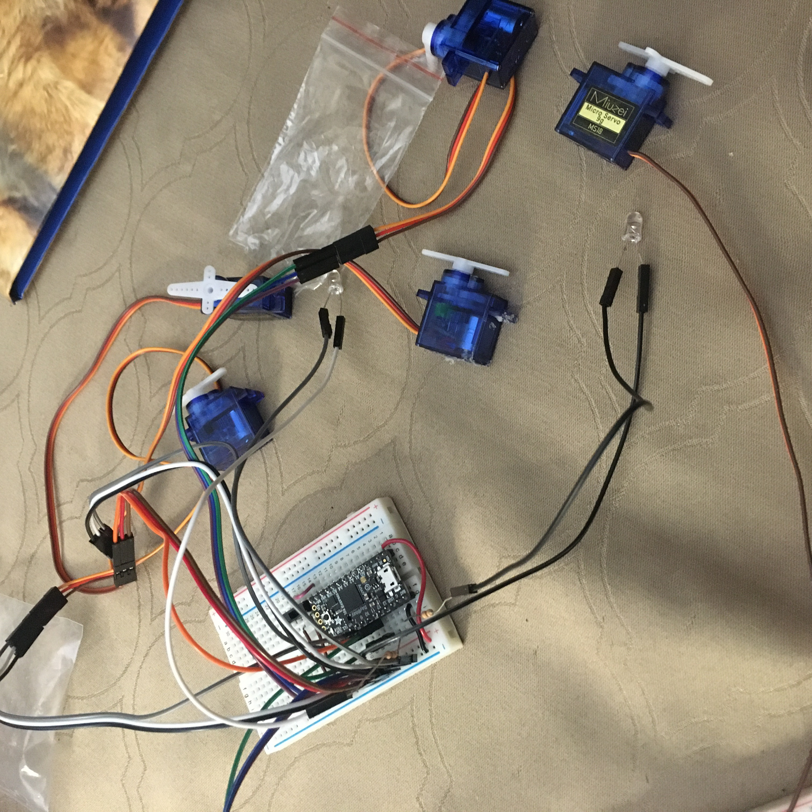
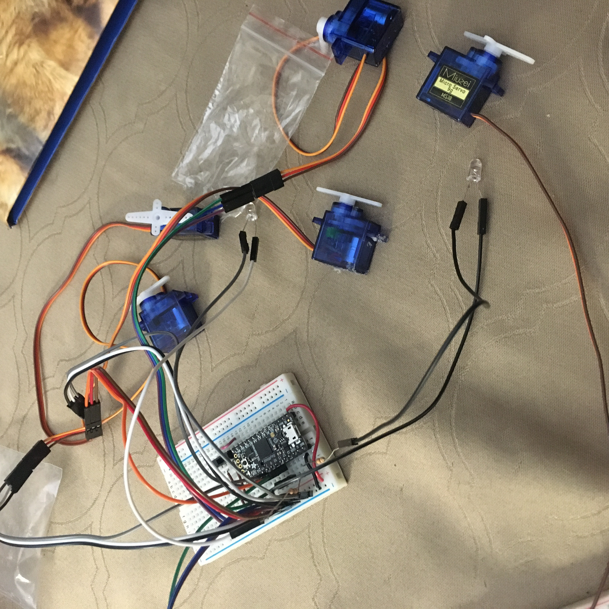
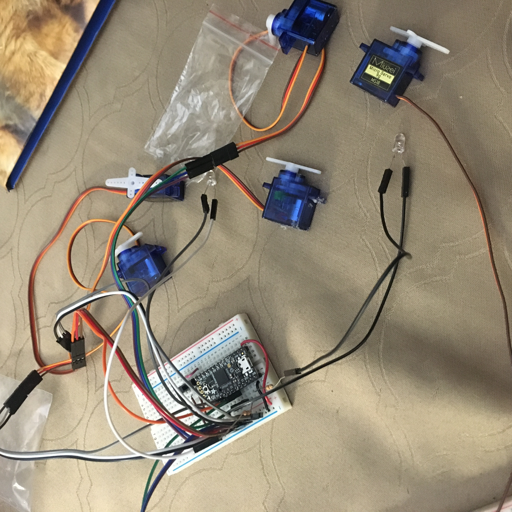

In preparation for my final project, I began connecting the necessary parts.

Here we see a switch on pin 2, which sets the state for the pins. There are also 5 servos from pins 5-11 (5, 7, 9, 10, 11). The two LEDs are on pins 12 and 13, each with a 10kOhm resistor
in their respective circuits. The big jumble of wires for the time being is due to each servo having 3 total wires to connect to ground (brown or black), power (red), and a pin (orange).
That means 15 wires just to communicate with the 5 servos.
An ultrasound sensor has four pins. From left to right, they should be connected to power (5v), a digital pin, a different digital pin, and ground. This can be seen in the circuit below.
Since I am using an Itsybitsy microcontroller, I connected the power to USB to supply the 5 volts. Does not work with the 3v3 pin.
The code used for detecting objefcts using ultrasound (set to write a value 215 or higher when does not detect within the range):
 
